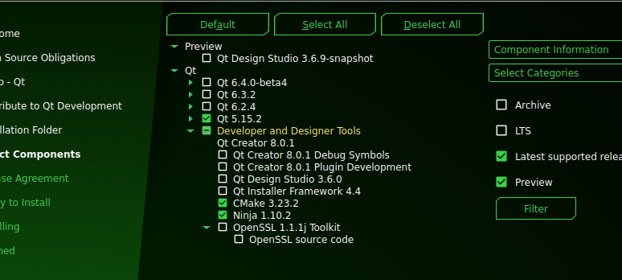
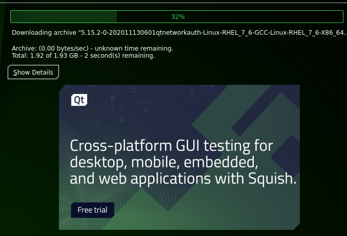
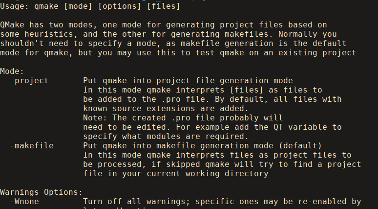

[main]Notes on TeXmacs
[main]Notes on TeXmacs
 [main]Notes on TeXmacs
[main]Notes on TeXmacs
Guile 1.8.8 is no longer supported on modern distributions. Let us build mgubi's Guile3 scheme TeXmacs fork.
Install Guile 3.
sudo apt install guile3 guile3-dev
Download the Qt online installer from here.
Make the installer executable with the command
chmod +x <path-to-installer.run>
Run the installer. You will have to create a Qt account to proceed. When you arrive at the components page. Select these packages:

Agree to the license and wait for the download to finish (It was around 9Gb for me).

Add the Qt binaries to your path. For me the installer installed the Qt directory in my home directory so I had to add the path ~/Qt/5.15.2/gcc_64/bin/ with the command:
export PATH=~/Qt/5.15.2/gcc_64/bin/:$PATH
If you want to add the Qt binaries to your path permanently, then place the command above into your ~/.bashrc file, so that it is executed each time you run the terminal.
Now the qmake command should work and output something like this:

Navigate to the directory where you want TeXmacs' sources to be placed in.
Clone mgubi's repo and navigate into it.
git clone https://github.com/mgubi/texmacs.git texmacs-guile3
cd texmacs-guile3
Checkout the Guile 3 branch.
git checkout guile3
Go into the src directory.
cd src
Run the configure command (the first dashes are double dashes – it is just weird HTML rendering <dash><dash>with<dash>guile2 etc.).
./configure –with-guile2 –enable-guile2
Compile TeXmacs.
make -j4
It took me around 2 minutes to compile the sources with -j12. I guess the scaling is nonlinear so with -j4 it should take no more than 6 minutes or so (just a guess).
The texmacs binary is placed in <repodirectory>/src/TeXmacs/bin/texmacs